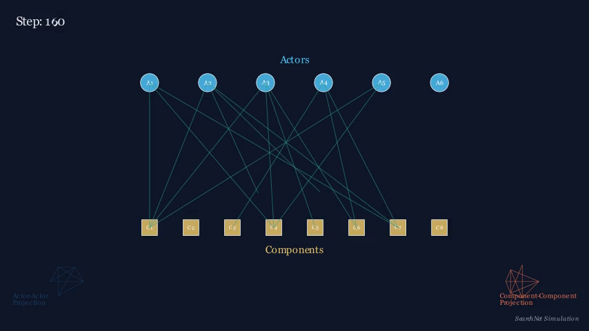
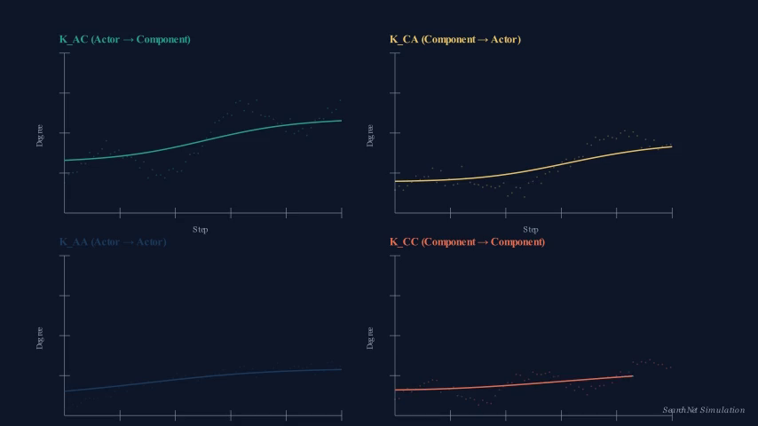
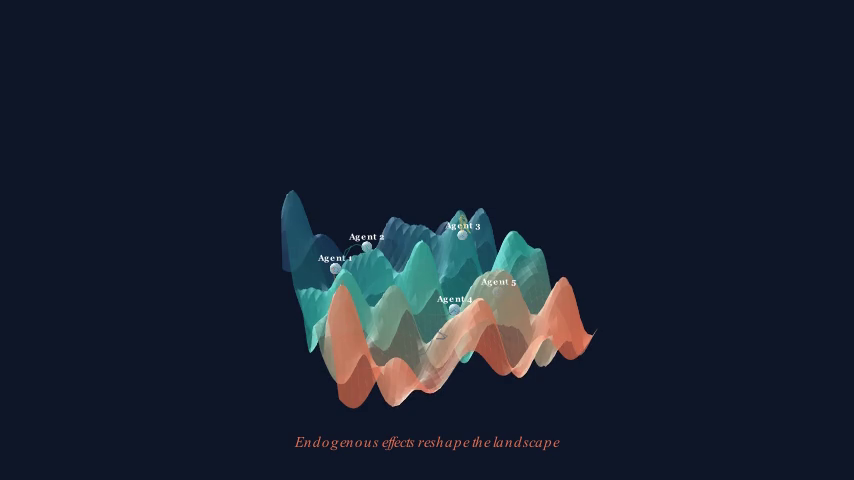

One engine for competitive interdependence — from Kauffman's NK landscapes to actor-oriented network agency. An R package, a REST API, a web app, a book, and a machine-verified proof chain.
how many components a firm holds
how many firms hold a component
firm–firm projection, emergent rivalry
the classical NK K — now endogenous



Why competitors converge: 33 years of U.S. airlines, an 8-layer information funnel, and the imitation mirage.
Four instruments, a Stackelberg government, and the mirage of government resources.
How capital abundance reshapes investor search — discipline vs. herding.
The Penrose Effect, endogenized: scope helps until hiring outruns absorption.
Does the SAOM-vs-STERGM choice silently decide where agency lives?
Under interdependence, the classic variance decomposition is biased.
Held together by a verified formal core: NK ⊂ SAOM ⊂ Brock–Durlauf / QRE — doubly micro-founded in sociology and economics.
Find your research question where your best data lives. Then simulate one rung up the information funnel — D + 1.
Code, the searchnet R package, and replication materials are available on request — come find us at the AOM PDW.